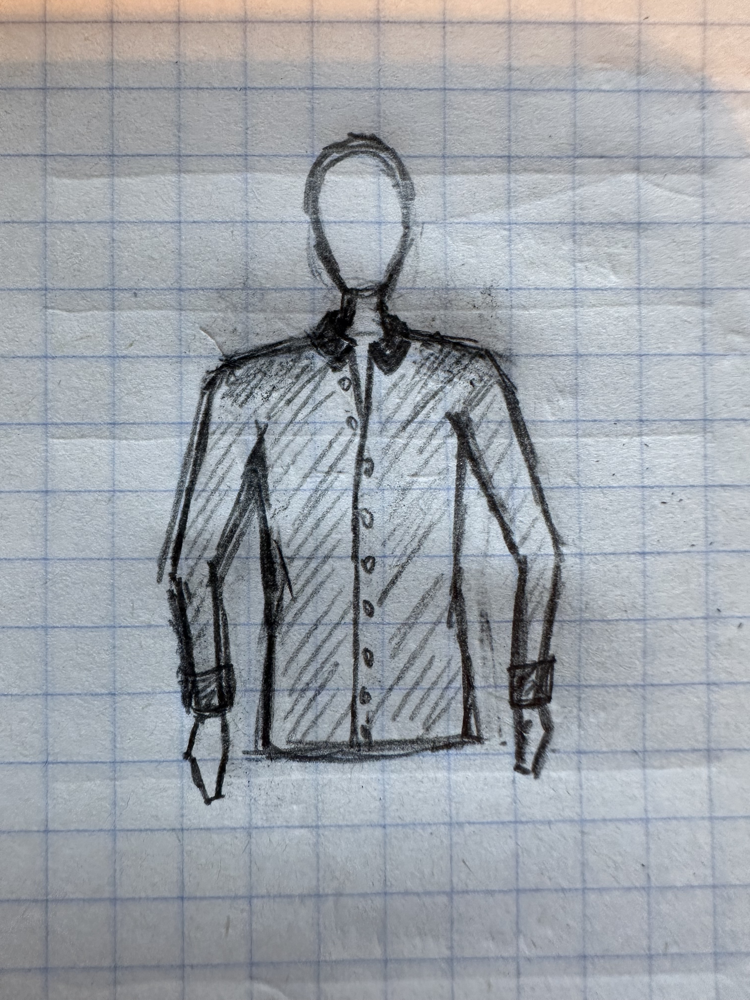
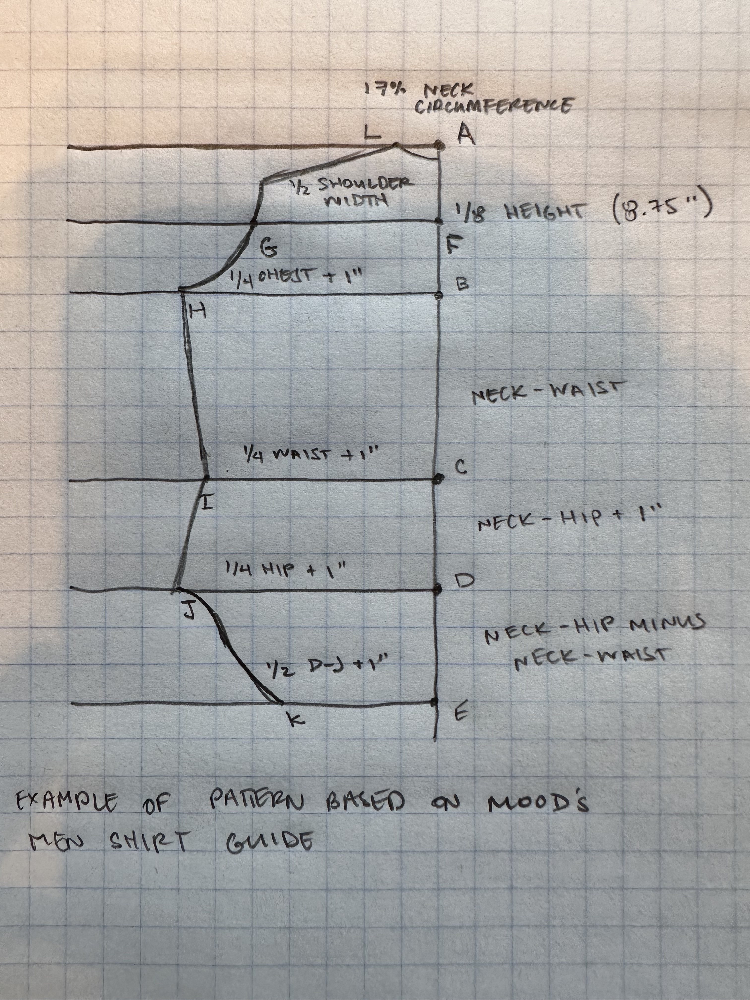

Steps
For the final project, I'm planning to parametrically design patterns for a tailored shirt, laser cut those patterns from fabric, 3d print designs onto the fabric, and then sew the shirt.
 
- create Grasshopper defintion for front/back panels, sleeves, and collar following the Mood fabrics drafting tutorials
- create the Rhino 2d model of patterns and use them to laser cut the fabric if possible, or pattern pieces if not, or hand cut if laser cutter is not available
- create Rhino 3d model of design to be printed on shoulders of the fabric (design to be determined)
- print 3d models onto fabric, fabric glue if necessary
- sew pattern!

| Date | Plan | Contingency/disclaimer |
|---|---|---|
| 11/25 | Draft of pattern pieces ready in Rhino from Grasshopper definition | Design is preliminary, may change based on aesthetic and functional decisions |
| 11/27 | Test 3d printing onto final fabric | If 3d print on fabric does not stick, will use fabric glue to attach printed pieces |
| 11/28 | Test laser cutting fabric / pattern pieces | If laser cutter is unavailable for any reason, will cut by hand |
| 11/30 | 3d model to print is done, tested on fabric | - |
| 12/1 | 3d printing onto fabric is complete, sewing begins | - |
| 12/2 | Construction complete, write up remaining | - |
| 12/6 | Project done! | - |
| # | Item | Location | Est. price |
|---|---|---|---|
| 1 | Fabric | Pacific Fabrics | $20-40 |
| 2 | Thread | -already own- | -already own- |
| 3 | PLA filament | -already own- | -already own- |
| 4 | Pattern paper | Blick's | $5 |
| 5 | Buttons | Pacific Fabrics | $5 |
Resources
nothing yet...
External resources:3D printing on fabric
Create a text object in grasshopper
inch to mm - Google Search
Curve Derivatives
Grasshopper Curve - Addon for Grasshopper
Tips and Tricks for Advanced Curve Modeling in Rhino
Which command to best fit a smooth curve through a scattering of points?
Finding the point with the lowest X and Y value
3D Printed Fashion: The Top Designs
HTML Tables
Git Config - How To Use Git Config | W3Docs Git Online Tutorial
Three Ways to Attach Boning
Boning - Types and Sewing Tips -- CreateForLess
How to Sew a Men's Shirt
3D Printing on fabric is easier than you think! – Geeetech
How to 3D Print Onto Fabric
How to Measure Yourself for Sewing and Why
Drafting a Men's Shirt Pattern Part 3
Drafting a Men's Shirt Pattern Part 2
Drafting a Men's Shirt Pattern Part 1
Zotero
CSS-TRICKS
GeeksforGeeks
Thanks to the various posts in the Discord channel for the help!
Also thanks to Sara Cagle for ideas about laser cutting fabrics.